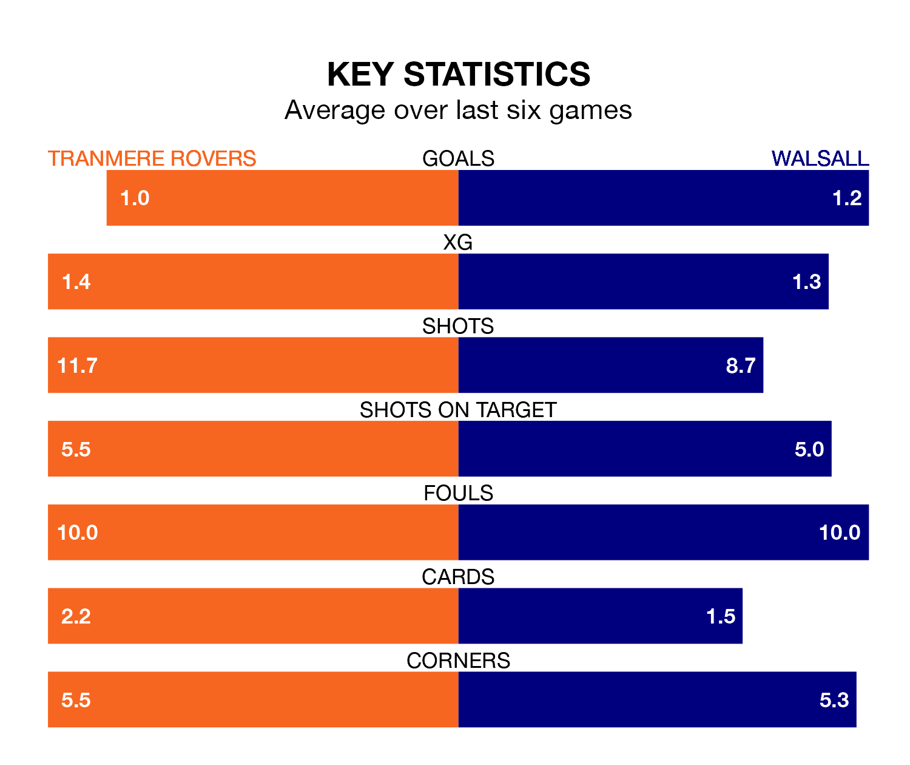

Walsall travel to Tranmere Rovers on Saturday in EFL League Two.
The visitors come into the game on the back of a win in their last match, having beaten Salford City 2-1 at home, with a goal from Jamille Matt.
Tranmere, meanwhile, drew their last match, 1-1 against Colchester United, with their goal scored by Kieron Morris.
In the last 10 years, Tranmere and Walsall have played each other on nine occasions. Tranmere won two of them, Walsall five, and they drew twice.
On average, Tranmere scored 0.8 goals and the Saddlers 1.3 in those matches.
Their last meeting was on December 16, when Walsall won 1-0 at home.
With 60 goals in 42 games so far this season, Tranmere are scoring at below the league average rate with 1.4 goals per game. But they are conceding fewer than average too, letting in 60 goals at a rate of 1.4 per game.
Walsall, meanwhile, are average scorers, with 1.5 goals per game. They have conceded 1.4 goals per game.
Rovers are 17th in the table after 42 games, of which they have won 15 and drawn six, earning 51 points.
The Saddlers are six places ahead of the hosts in 11th, with 16 wins and 11 draws putting them on 59 points.
Tranmere are in mixed form in EFL League Two, with two wins and two draws from their last six games.
And also with two wins and two draws over that period, the away side's form is identical – they have both taken eight points from 18.
Walsall's Isaac Hutchinson is among the league's most creative players, racking up nine assists in 40 appearances so far this season, and holding fourth spot in EFL League Two's assist charts.
For Tranmere, Brad Walker and Conner Jennings have set up the most goals, having laid on six assists apiece to date.
Saturday's match will be refereed by Seb Stockbridge, who has taken charge of 10 EFL League Two games so far this season, issuing no red cards and booking 56 players. He has awarded five penalties.
The last Tranmere game Stockbridge refereed was a 2-1 home win against Newport County on December 9. He is yet to oversee a match featuring Walsall this season.
Updated: 16:41 (UTC), 04/04/24